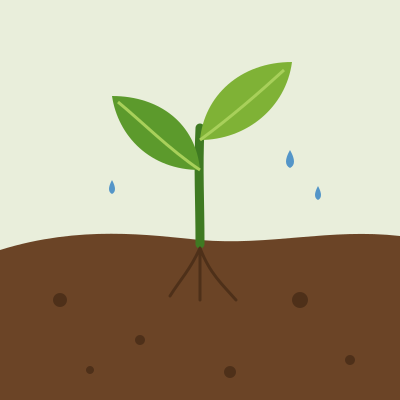
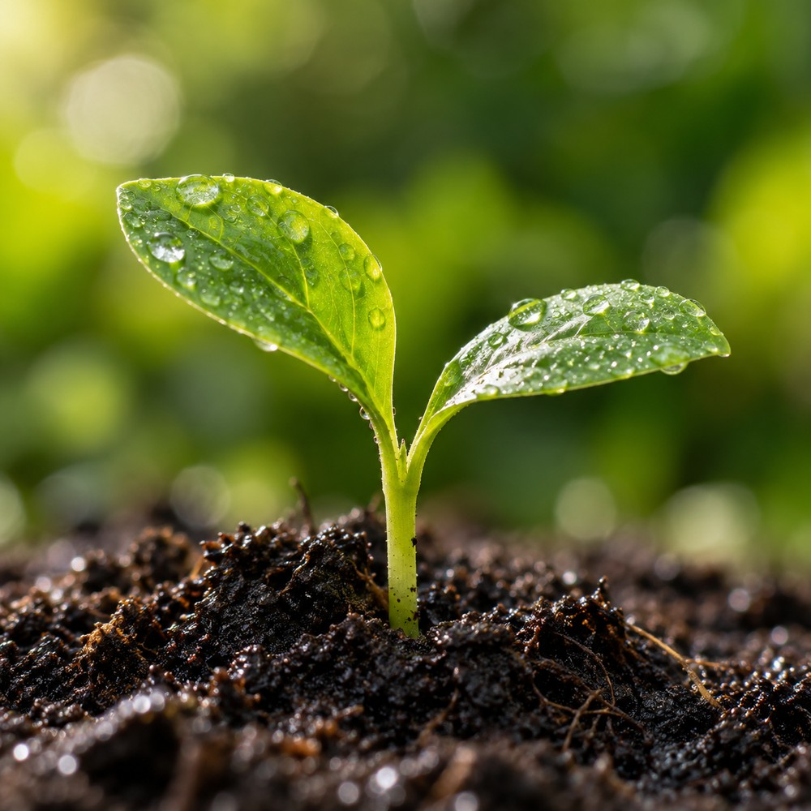
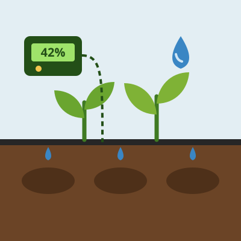
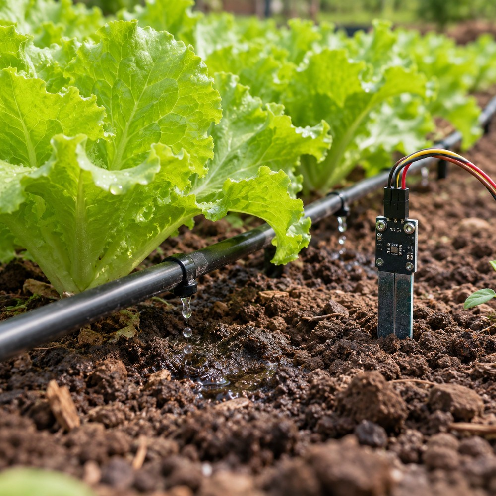

Passo a passo
Como criar sua horta
- 01
Escolha o local
Sol de 4 a 6 horas por dia e água por perto.
- 02
Prepare e plante
Solo fofo, com composto, e as plantas no espaço certo.
- 03
Cuide e automatize
Regas, limpeza do canteiro e sensores que ajudam.
Sobre o projeto
Uma horta feita em grupo, com ajuda da tecnologia
O Portal da Horta reúne o que aprendemos ao montar uma horta comunitária: como plantar, como cuidar e como a irrigação automática ajuda nos dias em que ninguém pode regar.
- Plantio explicado em quatro etapas
- Fichas de alface, cebolinha, salsa e outras plantas
- Sensores, irrigação e um simulador de rega


Imagem ilustrativa gerada por IA.Parceria
Um projeto entre Brasil e Chile
Estudantes de uma escola brasileira e de uma escola chilena montam, cuidam e documentam a horta juntos. O site está em português, inglês e espanhol para que todos possam usar.
Ver participantesO que você encontra
Explore o portal
Criando uma horta
Do terreno vazio ao primeiro canteiro: escolher o local, preparar o solo, plantar e cuidar.
- Local com sol e água por perto
- Solo fofo com composto orgânico
- Cuidados de todo dia

 Imagem ilustrativa gerada por IA.
Imagem ilustrativa gerada por IA.Fichas das plantas
Luz, água, espaçamento, plantio e colheita de cada espécie da nossa horta.
- Alface, cebolinha e salsa
- Coentro, rúcula, couve e outras
- Quando e como colher


Imagem ilustrativa gerada por IA.Horta automatizada
O sensor mede a umidade do solo, o controlador decide e a água chega sozinha.
- Gotejamento, microaspersão e aspersão
- Sensores de umidade e temperatura
- Simulador de rega para testar a lógica
Diário da nossa horta
Registre o que foi plantado, o que mudou e o que o grupo aprendeu.
- Um registro por dia
- Fica salvo no navegador
- Mostra quem registrou
Fotos e vídeos
A horta em imagens, do primeiro canteiro até a colheita.
- Galeria de fotos
- Vídeos do departamento Horta e Vídeos